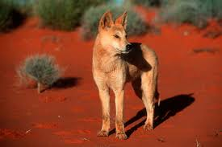

Reptiles
Reptiles are cold-blooded vertebrates that have scales or scutes covering their skin. They breathe air through lungs and most lay eggs on land, though some give birth to live young. Reptiles include snakes, lizards, turtles, crocodiles, and alligators. They are ectothermic, meaning they rely on external heat sources to regulate their body temperature. Reptiles have adapted to live in various environments including deserts, forests, oceans, and freshwater habitats. Many reptiles are excellent predators with specialized hunting techniques.
Lizards
Lizards are a diverse group of reptiles found in various habitats around the world.
Dingo
The dingo is one of Australia's most unique wild animals. Though it resembles a domestic dog, it is a separate species that has lived in the wild for thousands of years. Adaptable and intelligent, the dingo plays a crucial role in Australia's ecosystems but also creates tension with farmers. This essay explores the dingo’s appearance, habitat, diet, behavior, role in the ecosystem, human interaction, and includes some fascinating facts about this remarkable animal.
Appearance
Dingoes have a sleek, athletic build ideal for running and hunting. Their fur is usually golden-yellow, but can also be reddish, black, or white. They have upright ears, almond-shaped eyes, and a bushy tail. Adult dingoes typically weigh between 13 to 24 kilograms and stand about 50 to 60 centimeters tall at the shoulder
Habitat
Dingoes are incredibly adaptable and live in deserts, grasslands, tropical forests, and even alpine areas. They are especially common in central and northern Australia but are less common in the southern regions due to farming and fencing.
Diet
Dingoes are skilled hunters and feed on a wide variety of animals. Their diet includes rabbits, birds, reptiles, rodents, and sometimes larger prey like kangaroos and wallabies. They also scavenge food when necessary.
Behavior and Social Structure
Dingoes are intelligent, social animals. They may live alone, in pairs, or in packs. In a pack, only the dominant male and female usually breed, while the others help care for the pups. They communicate through howling, scent marking, and body language.
Role in the Ecosystem
Dingoes play the role of apex predator in many Australian ecosystems. They help control populations of rabbits, wallabies, and feral animals like foxes and cats, which can threaten native species.
Interaction with Humans
While dingoes help maintain ecological balance, they are often in conflict with farmers, especially in sheep-farming areas. To protect livestock, farmers have used fences, traps, and poison baits. However, conservationists argue that dingoes should be protected due to their ecological importance.
Interesting Facts
Dingoes are believed to be the oldest breed of dog still living in the
wild, having arrived in Australia over 4,000 years ago—long before
European settlers.
Studies show that where dingoes thrive, smaller predators like foxes and
feral cats are less common—this effect is known as
"mesopredator suppression" and helps protect native wildlife.
Dingoes do not bark as much as domestic dogs. Instead, they howl—often
in a rising and falling tone—which can carry long distances through the
bush.
In some areas, dingoes have been seen cooperating with wedge-tailed
eagles by circling prey, making it easier for both the bird and the
dingo to hunt successfully.
One of the longest man-made structures in the world, the Dingo Fence,
stretches over 5,600 kilometers across Australia. It was built to keep
dingoes out of southeastern farmlands.
Snakes
Snakes are elongated, legless reptiles known for their unique locomotion and diverse habitats.
Tortoises
Tortoises are land-dwelling reptiles known for their bony shells and slow movement.
Amphibians
Amphibians are cold-blooded vertebrates that typically live part of their lives in water and part on land. They have smooth, moist skin without scales and usually undergo metamorphosis from aquatic larvae to terrestrial adults. Amphibians include frogs, toads, salamanders, and newts. They breathe through their skin, lungs, and sometimes gills during their larval stage. Most amphibians lay their eggs in water or moist environments, and their permeable skin makes them sensitive to environmental changes and pollution.
Salamanders
Salamanders are a group of amphibians characterized by their slender bodies and long tails.
Cassowary

Type :Non-raptor
The cassowary is one of the most remarkable birds walking the Earth today. With its dinosaur-like appearance, vibrant coloring, and reputation as one of the most dangerous birds in the world, the cassowary is as fascinating as it is fearsome. Native to the tropical forests of northern Australia, New Guinea, and surrounding islands, this flightless bird plays a vital role in its ecosystem—and commands respect from anyone who crosses its path.
Species of Cassowary
There are three species of cassowary:
1.Sourthern Cassowary (Casuarius casuarius)– the most well-known and widely studied
2. Northern Cassowary (Casuarius unappendiculatus)
3. Dwarf Cassowary (Casuarius bennetti)
The Southern Cassowary is the largest and most iconic, often referred
to when people mention “the cassowary.”
Habitat
Cassowaries inhabit dense tropical rainforests, swamps, and mangroves
in northern Australia, New Guinea, and nearby islands. They prefer
areas with thick vegetation that provides cover and abundant food
sources. These birds are solitary and territorial, often establishing
large home ranges that they defend from other cassowaries. Their
primary range includes:
Northern Queensland, Australia+
New Guinea and surrounding islands
Parts of Indonesia
They rely on thick vegetation and ample fruit supplies, as they are
mostly forest dwellers, using their powerful legs to move through the
underbrush and escape danger.
Physical Characteristics
The cassowary looks like something out of prehistory:
It can grow up to 6.6 feet (2 meters) tall and weigh over 130 pounds
(60 kg). It has coarse black feathers that resemble hair. Its head and
neck are brightly colored in blue, red, and purple, with color
intensity increasing during mating season. On top of its head sits a
casque—a helmet-like structure made of keratin and bone, whose exact
function is still debated. It may help with sound amplification, head
protection, or moving through dense vegetation. But the most iconic
(and dangerous) part of the cassowary is its feet: each has three
toes, and the inner toe sports a dagger-like claw up to 5 inches (12
cm) long—capable of inflicting serious injuries.
Feeding Habits
Cassowaries are omnivorous, but their diet is largely frugivorous
(fruit-based). They consume:
A wide variety of fallen tropical fruits
Fungi, insects, small animals, and even dead mammals if necessary
Their strong beaks and digestive systems allow them to eat toxic or
tough fruits that other animals cannot. Remarkably, cassowaries play a
crucial ecological role as seed dispersers. Many rainforest plants
rely on cassowaries to eat their fruit and deposit the seeds—often far
away, complete with natural fertilizer from their droppings.
Behavior and Movement
They are:
Excellent runners, capable of reaching 50 km/h (31 mph) through dense
jungle
Strong swimmers, often crossing rivers and even swimming in the
ocean
Silent movers, but they can produce deep booming sounds, which may
help them communicate through thick forests
Despite their shy nature, when threatened—especially if cornered or
protecting eggs—they can become extremely aggressive. There have been
recorded attacks on humans, sometimes causing serious injuries or, rarely, death.
Breeding and Parenting
Cassowary reproduction is as fascinating as the bird itself. In a
reversal of typical bird parenting roles:
Females are larger, more colorful, and dominant. After mating, the
female lays 3–6 large, green eggs in a shallow ground nest. She then
leaves—and the male takes full responsibility, the male incubates the
eggs for about 50 days, and then raises the chicks for up to 9 months.
During this time, he defends them fiercely, teaches them how to find
food, and ensures they survive in the wild jungle environment.
Niche and Ecological Role
Cassowaries are known as “keystone species” because of their crucial
role in seed dispersal. Some rainforest trees and plants depend
entirely on cassowaries to reproduce. Without them, these ecosystems
would collapse. Cassowaries also help shape the forest structure
by:
Spreading large seeds over great distances, enabling rare or
endangered trees to survive Because they can consume over 150
different types of fruit, they’re sometimes called the gardeners of the rainforest.
Niche Facts and Fascinating Details
The cassowary casque continues growing throughout its life and may help age or identify individuals. Cassowaries cannot fly, but their strong legs make them powerful runners and jumpers. The cassowary’s call—a deep, low-frequency "boom"—is one of the lowest-pitched bird calls in the world, possibly used for long-distance communication in dense forests. In Aboriginal culture, cassowaries are respected and sometimes feared—appearing in stories and myths as guardians of the forest. Despite their size, they are masters of camouflage in the underbrush, often going unnoticed even when nearby. Cassowaries are listed as vulnerable due to habitat loss, hunting, and vehicle collisions. Conservation efforts focus on protecting their habitats and educating local communities about their ecological importance. The cassowary is the only bird in the world with a "helmet" on its head, which is made of keratin (the same material as human nails) and can grow up to 18 inches (45 cm) tall. This casque is thought to help the bird navigate through dense vegetation and may also play a role in attracting mates during the breeding season. The cassowary's feet are incredibly powerful, allowing it to run through dense forests at speeds of up to 50 km/h (31 mph). Its inner toe has a sharp, dagger-like claw that can inflict serious injuries, making the cassowary one of the most dangerous birds in the world. Despite their fearsome reputation, cassowaries are generally shy and prefer to avoid human contact. They are primarily solitary animals, although they may form small groups during the breeding season or when food is abundant. Cassowaries have a unique way of communicating with each other, producing deep, booming calls that can be heard over long distances. These calls are thought to play a role in attracting mates and establishing territory. They are also known to produce a variety of other vocalizations, including hisses, grunts, and growls, depending on their mood and situation. Cassowaries have a relatively long lifespan, living up to 20–25 years in the wild. They reach sexual maturity at around 3–4 years of age, and can live up to 20–25 years in the wild. They reach sexual maturity at around 3–4 years of age, and are known for their solitary nature outside of breeding season.
Newts
Newts are small, semi-aquatic amphibians that belong to the salamander family.
Frogs
Frogs are tailless amphibians known for their jumping abilities, croaking sounds, and smooth, moist skin.
Axolotls
Axolotls are a type of neotenic salamander that remain aquatic and gilled throughout their lives.